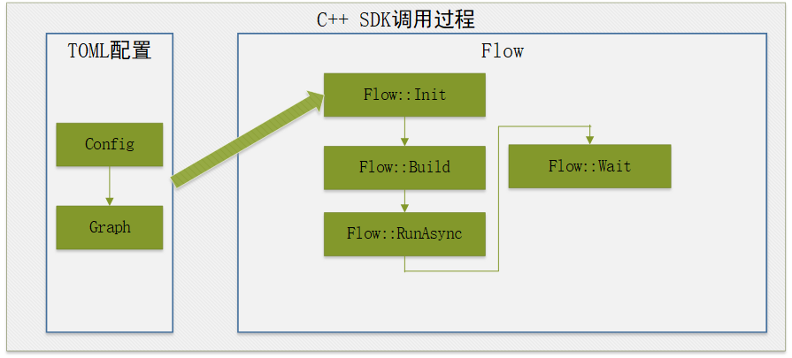

C++开发流程图
当前方式适合哪些场景下使用
此方式主要适用于C++开发者开发流程图。
C++的API接口
flow的运行流程可参考flow章节。
从flow章节中我们知晓了流程图运行的流程，在C++中有对应的函数接口用于处理对应不同的阶段。下面是C++中使用的API列表：
| API接口 | 参数说明 | 函数说明 |
|---|---|---|
| Flow::Init | configfile: 指定config文件的路径 format： 指定图文件的格式，可选项为 FORMAT_AUTO,FORMAT_TOML，FORMAT_JSON |
初始化ModelBox服务，主要包含功能如下： 1. 读取driver参数，获取driver的扫描路径 2. 扫描指定路径下的driver文件，并创建driver实例 3. 加载流程图并转换为ModelBox可识别的模型 4. 初始化设备信息，性能跟踪和数据统计单元 |
| Flow::Init | name: 指定的图的名称 graph: 存储图的字符串 format：指定图的格式 |
与上面Init的区别是，上面通过读取文件的方式，而此函数通过读取字符串的方式，其他功能相同 |
| Flow::Init | is: 图的输入流istream fname: 输入的图名称 |
功能与上面Init相同， 区别在于输入的是流保存的图信息 |
| Flow::Init | config: Configuration指针，存储图信息 | 功能同上 |
| Flow::Build | / | 用于构建图，将图模型转为可以运行的Node节点并且建立好数据通道 |
| Flow::Run | / | 图的运行： 同步方式，图运行完成后返回 |
| Flow::RunAsync | / | 图的运行： 异步运行， 调用后直接返回， 通过调用Wait()函数判断运行是否结束 |
| Flow::Wait | millisecond: 超时时间， 以毫秒为单位 ret_val: 图运行的结果 |
等待图运行结束，当图的运行时间超过millisecond表示的时间时，则强制停止图的运行，并返回TIMEOUT |
| Flow::Stop() | / | 强制停止运行中的图 |
| Flow::CreateExternalDataMap | / | 当图中的第一个节点为input节点时， 使用此函数可以创建一个输入的ExternalDataMap， 用户可以通过向ExternalDataMap数据中赋值并传递数据给Input节点。具体使用方法可参考<外部数据交互>章节 |
C++ SDK API调用说明
C++开发调用流程图时，需要先安装C++的运行包，然后再编写C++函数，调用Flow执行API执行流程图。
Flow流程图接口调用过程如下图所示。

- 安装C++ SDK包
- 开发流程图，配置基础部分和图部分。
- 调用Flow::init接口，输入流程图文件。
- 调用Flow::build初始化流程图。
- 调用Flow::run_async，异步执行流程图。
- 调用Flow::wait等待结果。
TOML流程图配置
[driver]
dir=""
skip-default = false
[graph]
graphconf = '''digraph demo {
input[type=input]
output[type=output]
process[flowunit=process]
input->process->output
}'''
format = "graphviz"
导入ModelBox包
编写时，需要引入头文件。
#include <modelbox/flow.h>
基本接口
int RunFlow(const std::string &file) {
// 创建Flow执行对象
auto flow = std::make_shared<modelbox::Flow>();
// 输入流程图配置文件
MBLOG_INFO << "run flow " << file;
auto ret = flow->Init(file);
if (!ret) {
MBLOG_ERROR << "init flow failed, " << ret.WrapErrormsgs();
return 1;
}
// 创建流程图
ret = flow->Build();
if (!ret) {
MBLOG_ERROR << "build flow failed, " << ret.WrapErrormsgs();
return 1;
}
// 异步执行
flow->RunAsync();
// 等待执行结果
ret = flow->Wait();
if (!ret) {
MBLOG_ERROR << "run flow failed, " << ret.WrapErrormsgs();
return 1;
}
// 结束执行
flow->Stop();
MBLOG_INFO << "run flow " << file << " success";
return 0;
}
- 流程执行流程
- 使用flow-example.toml文件中配置的流程图初始化flow，
auto flow = std::make_shared<modelbox::Flow>()， 如何配置流程图详见流程图开发流程 flow->Init(file)根据配置文件初始化flow对象。flow->Build()开始构建flow对象flow->RunAsync()开始异步运行flowflow->Wait()等待flow结束，参数为超时时间，超时时间为0表示无限等待。flow->Stop()停止流程图。
- 使用flow-example.toml文件中配置的流程图初始化flow，
外部数据交互
- 配置图，图中增加
input,output端口名称。
digraph demo {
input[type=input]
output[type=output]
process[flowunit=process]
input->process->output
}
- 初始化图的数据处理对象。
std::shared_ptr<ExternalDataMap> ExternDataInit(std::shared_ptr<modelbox::Flow> flow) {
auto ext_data = flow->CreateExternalDataMap();
return ext_data;
}
- 代码发送数据，到
input端口。
modelbox::Status SendExternalData(std::shared_ptr<ExternalDataMap> ext_data, void *data, int len) {
// 申请外部数据对象
auto output_buf = ext_data->CreateBufferList();
// 申请内存，并设置内容
output_buf->Build({len});
auto buff = (int*)output_buf->MutableData();
memcpy(buff, data, len);
// 将数据发送到input端口
auto status = ext_data->Send("input", output_buf);
if (!status) {
return {status, "send data to input failed."};
}
// 关闭输入
status = ext_data->Shutdown();
if (!status) {
return {status, "shutdown failed."};
}
return modelbox::STATUS_OK;
}
- 代码从图中
output端口接收数据
modelbox::Status RecvExternalData(std::shared_ptr<ExternalDataMap> ext_data) {
OutputBufferList map_buffer_list;
// 接收数据
while (true) {
auto status = ext_data->Recv(map_buffer_list);
if (status != STATUS_SUCCESS) {
if (status == STATUS_EOF) {
// 数据处理结束
break;
}
// 处理出错，关闭输出。
auto error = ext_data->GetLastError();
ext_data->Close();
MBLOG_ERROR << "Recv failed, " << status, << ", error:" << error->GetDesc();
break;
}
// 处理结果数据
auto buffer_list = map_buffer_list["output"];
ProcessData(buffer_list);
}
return modelbox::STATUS_OK;
}
C++日志
默认情况，ModelBox的SDK输出日志到console，业务需要注册相关的日志处理函数，注册方法可参考日志章节